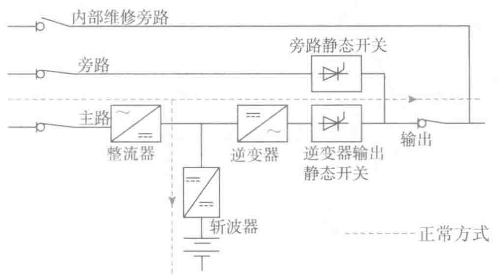

- 整流器具有非常宽的输入电压范围。
- 逆变器具有精确调节的输出电压。
- 输入和输出频率是互相独立的，从而确保了输出频率在严格的允许范围内。
- 通过断开静态开关，能够用做频率转换器（这样，静态旁路将禁止使用，不可以再进行切换）。
- 如果市电停电，无间断切换到电池后备方式。
- 无间断地切换到旁路（旁路方式）供电。
- 手动旁路（通常是标准配置）便于维护。
- 缺点：由于其结构的复杂性，价格高；正常运行时要经过AC-DC-AC两次转换，运行效率相对较低。但以上优点补偿了缺点。
双转换UPS占据了已销售的绝大多数中大功率UPS系统。这是由于它在满足该功率范围内敏感负载的要求方面具有众多要求，更重要的是由于它的逆变器是与交流输入串联连接的，在市电断电后与多种运行模式（详见后面的介绍）转换，真正做到了电压波形不间断切换。
双转换UPS虽然成本较高，但是高成本是由需要完善对敏感性负载的保护性能造成的。
3. 双转换在线UPS的基本运行方式
（1）正常方式
以市整流逆变电运行，如图3-4所示。

UPS通过整流器从主交流输入吸取所需要的功率运行，由整流器提供直流电源，其中一部分用来对电池进行充电。如果电池已经充满，充电电流为浮充电流；如果电池未充满（即刚放过电后进行充电），充电电流为恢复性充电电流或再充电电流。其余的直流电流供给逆变器，并通过逆变器产生一个幅值和频率都在规定允许范围内的正弦波输出电压。
（2）电池后备方式
以电池电力运行，如图3-5所示。